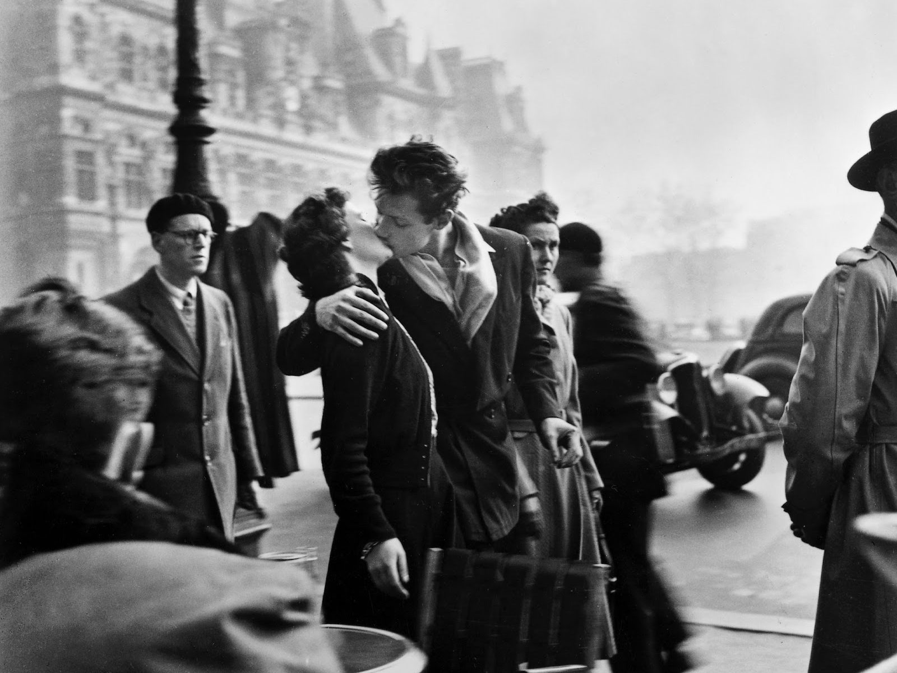
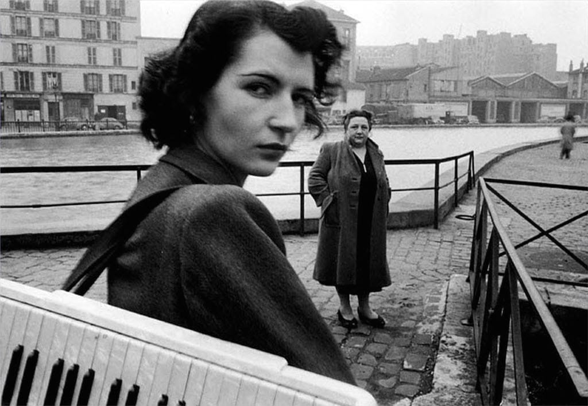
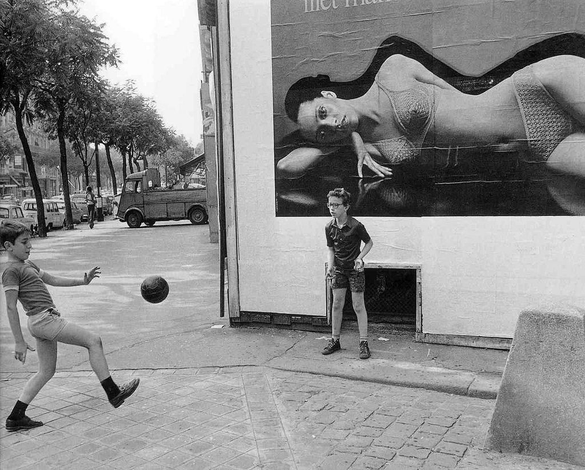
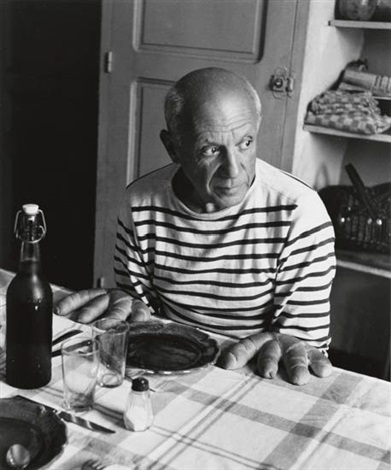
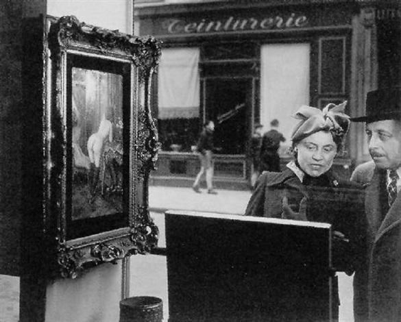

Ultimi articoli
Vedi tutti →
La vera storia dietro "Il Bacio dell'Hôtel de Ville"
Non era un momento spontaneo. Doisneau aveva pagato due attori per posare davanti al caffè. Solo decenni dopo la verità è emersa, scatenando controversie legali. Ecco cosa è successo davvero.

La fisarmonica e i portici: Parigi sonora di Doisneau
Come la musica di strada diventa poesia visiva attraverso l'obiettivo del fotografo più amato di Parigi.

I bambini di Doisneau: innocenza come atto politico
Nel dopoguerra segnato dalla ricostruzione, immortalare il gioco nei quartieri operai era un gesto di speranza.

Picasso e le baguette: la foto più divertente del '52
Dietro quello scatto iconico c'è una storia di amicizia, ironia e una colazione improvvisata nello studio di Vallauris.

Lo sguardo obliquo: l'ironia come metodo visivo
Doisneau usava l'umorismo come strumento critico. Ogni dettaglio fuori posto è una nota a margine sul carattere umano.
Tutto quello che
devi sapere
Risposte alle domande più comuni sulla mostra, i biglietti e come organizzare la visita a Pordenone.